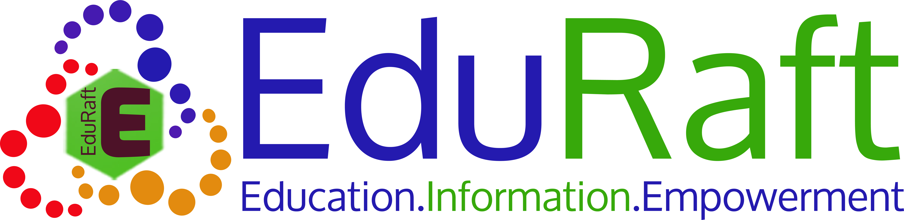

EDURAFT:
EduRaft provides information of all schools, Tuitions, Sports , Hobby
Classes, Extracurricular and Co-Curricular Activities in Chennai,
Mumbai and Bangalore. EduRaft has come up with various tools and
mechanishm which help the parents to identify the best school or
Tuitions or Sports center or Hobby Classes or Extracurricular or
Co-Curricular Activities for their children in their area. EduRaft has
been conceived for the purpose of providing information, tools and
resources helpful for decision making, tracking, monitoring, and
simplifying the value chain in K-12 schooling and related activities.
Number of people the company is willing to take in depends somewhere between 2-4
Nature of work for selected candidates:
Web application development, Marketing, Forum Promotion, Online and
Social Media Marketing.
Salary for the selected students:
Again dependent on the profile and the knowledge. A wide range will be
5k - 15k for interns and if we could find full time people then their
salary will be totally different.
Number of people who will be representing the company at the event:2